High 01
Mobile export action이 fixed UI 아래로 들어간다
Public save CTA는 Calendar export 버튼의 40px를, My Flow bottom nav는 15px를 덮는다. P29 E2E는 initial route만 검사해 expanded state를 놓쳤다.
2026-07-22 · INDEPENDENT PRODUCTION REVIEW
저장 전 결과, 별도 receipt, routine summary, My Flow library, Calendar scope, export contract는 production에서 확인됐다. 전면 rewrite가 아니라 fixed layer와 mobile focus를 우선 수정하는 revise가 맞다.
Evidence: current production interaction + current source + current package screenshot + heuristic simulation. 실제 관찰 사용자 0명.
Blocking은 없다. High 2건은 P29의 zero-overlap·stable-focus 주장과 직접 충돌한다.
Public save CTA는 Calendar export 버튼의 40px를, My Flow bottom nav는 15px를 덮는다. P29 E2E는 initial route만 검사해 expanded state를 놓쳤다.
FLOW -> 보조 메뉴 -> 4개 bottom tab -> Studio/Calendar scope 순이다. visual top 좌표가 28에서 779로 내려간 뒤 205 또는 117로 역행한다.
4개 mode와 저장 계약은 명확하지만, 제목·날짜 한 개를 바꾸려는 사용자도 기본 `항목 고르기` 전체를 먼저 마주친다.
실제 product code에 reviewer localStorage를 주입하면 10개 중 2개 배치와 undo가 동작한다. 하지만 exact demo route만으로는 이 여정을 재현할 수 없다.
full title과 aria-label은 유지되지만, suffix가 다른 긴 Flow끼리는 month cell scanning에서 구분하기 어렵다. selected-day에는 full identity가 보인다.
progressive disclosure는 성공했다. 다만 펼친 뒤 7개 요일, 시간, duration, 종료 조건, 횟수가 한 연속 form이므로 의미 그룹 구분은 더 선명해질 수 있다.
Full-page stitching이 아니라 겹침이 발생한 순간의 390x844 viewport다.
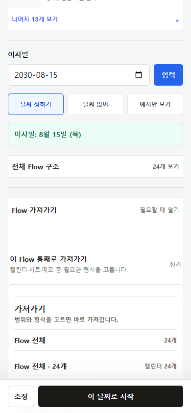
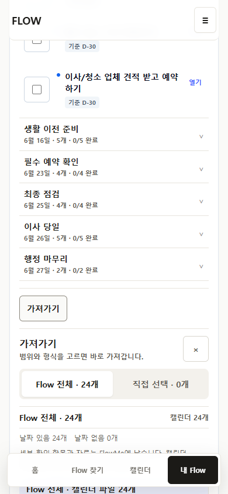
이 부분은 되돌리지 않는다. 같은 Flow가 저장 전, receipt, My Flow, Calendar로 이어지는 frame이 생겼다.

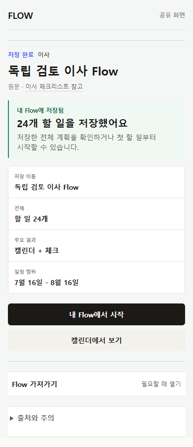

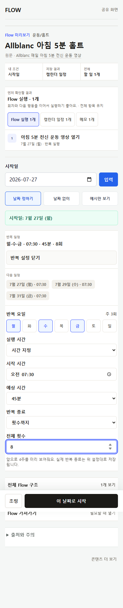
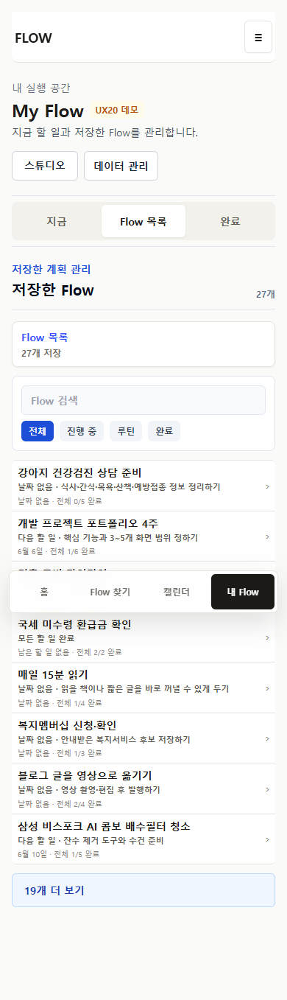
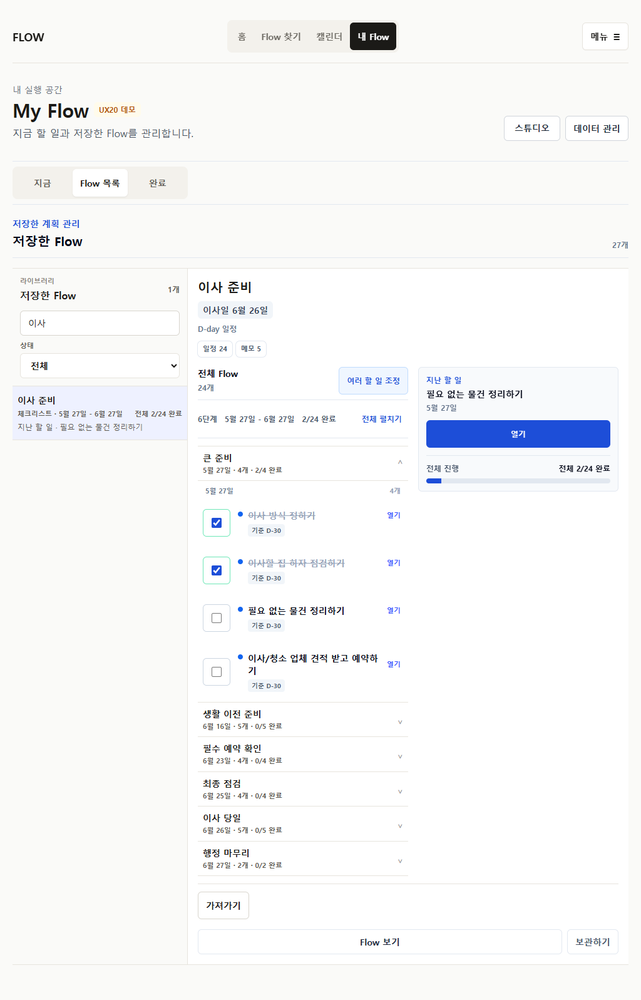
`partial`은 핵심 계약 실패가 아니라 확인된 interaction gap이 남았다는 뜻이다.
24-item preview, 조정, receipt, My Flow, Calendar, whole export 지원. Mobile export overlap 남음.
summary, next 3, 8회 조정, 7월 27일 occurrence 완료와 다시 진행을 확인.
compact scan/search/detail/complete/reopen/export 지원. Focus order와 export overlap 남음.
scope/search/2개 선택/agenda 지원. undated는 controlled fixture로 확인.
whole 24, selected 2, current 1과 receipt identity 일치. Preflight overlap 남음.
1024/1440은 모바일 확대가 아니라 rail/canvas/inspector 구조를 사용.
첫 회차 완료 후 다음 회차가 남고, undo하면 동일 날짜 회차가 다시 진행 상태로 돌아온다.
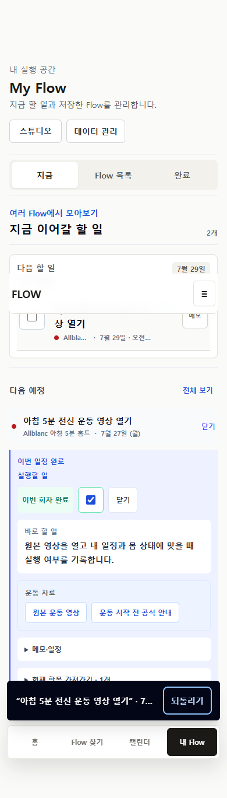
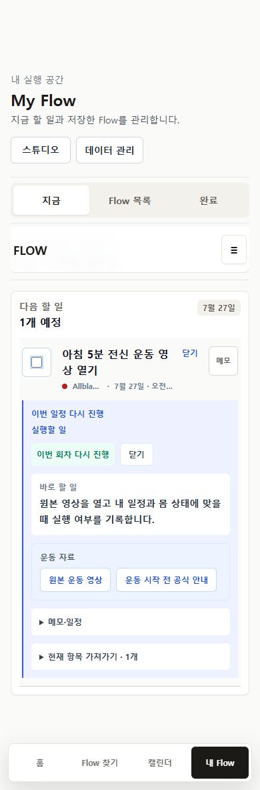
Compact scope와 selected-day는 유지한다. undated fixture와 1024 compact identity만 보완한다.
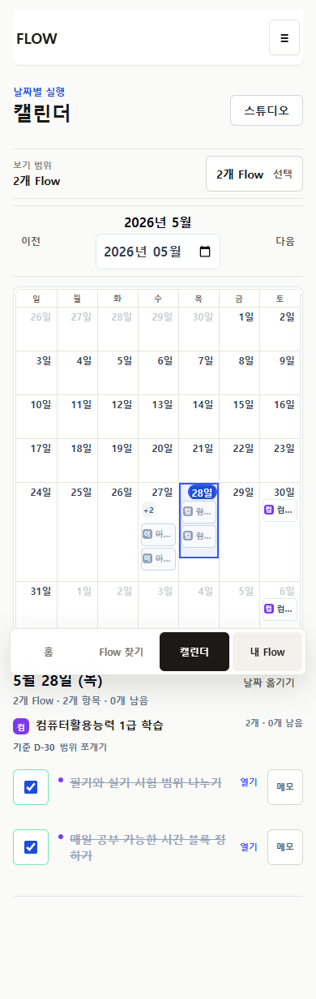
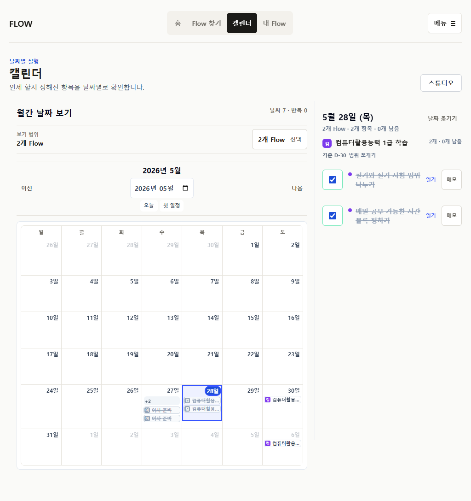

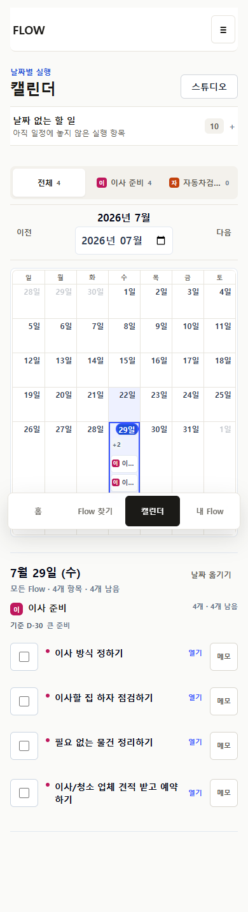
현재 source와 production interaction에서 migration이나 identity 회귀 근거는 발견되지 않았다.
새 기능 목록이 아니라 P29의 남은 증거 공백을 순서대로 닫는다.
Public save CTA와 My Flow bottom nav가 expanded export action을 덮지 않게 한다. Nested-state geometry E2E를 추가한다.
상단 header 다음에는 workspace가 오고 bottom tabs는 문서상 이후에 접근되도록 desktop/mobile nav DOM을 분리한다.
4개 mode와 overlay 계약을 유지하며 24개 item list를 section grouping/progressive expansion으로 다룬다.
Undated deterministic gate를 정본화하고, 새 저장 필드 없이 compact identity의 시각 판정을 고정한다.
Export open, routine complete/reopen, undated sheet/undo, focus order를 390/1024/1440 production에서 다시 검증한다.
기존 P29 suite는 모두 통과했다. 독립 nested-state 검토가 기존 suite가 놓친 overlap을 찾았다.
| Gate | Result | 해석 |
|---|---|---|
| docs:check | PASS · main 2,883 / artifact 2,532 | clean main baseline과 현재 보고서 링크 모두 검증 |
| pretest / unit | 33/33 · 584/584 | projection과 identity contract green |
| production build | PASS · 18/18 routes | Next 15.5.20 |
| P29 targeted E2E | 13/13 | initial-state overlap gate는 통과 |
| Independent production | 17/17 · 39 states | nested export overlap 2건 발견 |
| Observed users | 0 | 자동화를 사용자 검증으로 표현하지 않음 |
현재 내부 설계 단계에서는 답했다고 주장하지 않는다.